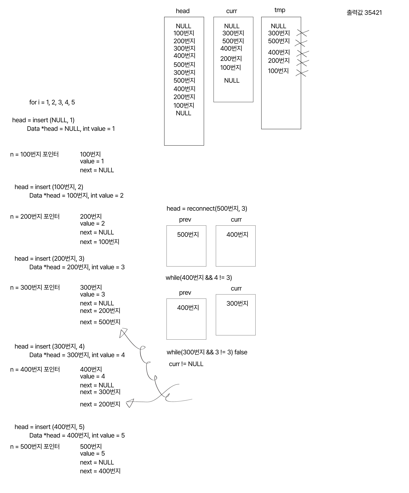

------------------------------------------------
------------------------------------------------
#include
char n[30];
char *gamja(){
gets(n);
return n;
}
int main() {
char *p1=gamja();
char *p2=gamja();
char *p3=gamja();
printf("%s\n", p1);
printf("%s\n", p2);
printf("%s\n", p3);
return 0;
}
홍길동
ㅇㅇㅇ
박영희로 입력했을 때,
박영희
박영희
박영희가 되는 이유?
제시된 C 언어 코드에서 입력값에 상관없이 마지막 입력인 박영희가 세 번 연속 출력되는 이유는 모든 포인터 변수(\(p1, p2, p3\))가 하나의 동일한 전역 메모리 공간(\(n\))의 주소를 가리키고 있기 때문입니다.이 현상이 발생하는 구체적인 원인과 메모리의 변화 과정을 단계별로 설명해 드리겠습니다.1. 전역 배열 메모리 공유코드의 맨 위에 선언된 char n[30];은 프로그램 전체에서 공유하는 전역 변수입니다.gamja() 함수는 새로운 문자열을 매번 다른 곳에 저장하는 것이 아니라, 항상 이 동일한 배열 n의 시작 주소를 반환합니다.2. 포인터 변수의 주소 값 대입main() 함수에서 p1, p2, p3는 문자열 자체가 저장되는 공간이 아닌, 메모리의 주소를 저장하는 포인터 변수입니다.세 변수 모두 gamja() 함수가 반환한 배열 n의 시작 주소(예: 0x1000)를 똑같이 가지게 됩니다.즉, \(p1 = p2 = p3 = \&n[0]\) 상태가 됩니다.3. 순차적 입력에 따른 데이터 덮어쓰기gamja() 함수가 실행될 때마다 배열 n 내부의 데이터는 다음과 같이 변경됩니다.첫 번째 실행 (p1 = gamja();)n 배열에 "홍길동"이 저장됩니다.p1은 n 배열의 주소를 가리킵니다.두 번째 실행 (p2 = gamja();)동일한 n 배열에 "ㅇㅇㅇ"이 입력되면서 기존의 "홍길동"을 덮어씁니다.p2 역시 n 배열의 주소를 가리킵니다.세 번째 실행 (p3 = gamja();)동일한 n 배열에 "박영희"가 입력되면서 기존의 "ㅇㅇㅇ"을 다시 덮어씁니다.p3 역시 n 배열의 주소를 가리킵니다.4. 최종 출력 시점의 메모리 상태printf 함수가 실행되는 시점에 배열 n에는 최종적으로 입력된 "박영희"만 남아 있습니다.\(p1\), \(p2\), \(p3\) 모두가 이 n 배열의 주소를 찾아가서 문자열을 읽어오기 때문에 결과는 모두 동일하게 출력됩니다.\(p1\rightarrow \text{배열\ }n\text{\ (내용:\ "박영희")}\)\(p2\rightarrow \text{배열\ }n\text{\ (내용:\ "박영희")}\)\(p3\rightarrow \text{배열\ }n\text{\ (내용:\ "박영희")}\)결론세 포인터 변수가 모두 동일한 전역 메모리 주소를 가리키고 있기 때문에, 마지막에 덮어쓴 데이터인 박영희가 세 번 반복하여 출력됩니다. 각 입력을 따로 보관하고 싶다면 gamja() 내부에서 동적 할당(malloc)을 사용하거나 main 함수에서 서로 다른 배열에 strcpy 등으로 문자열을 복사해두어야 합니다.문제를 해결하기 위한 동적 할당 코드 작성법이나 문자열
gets()는 표준 입력(stdin)으로부터 공백을 포함한 한 줄의 문자열을 읽어오는 함수입니다.1. 주요 특징공백 인식: scanf()와 달리 띄어쓰기(space)가 포함된 문자열도 한 번에 입력받을 수 있습니다.
------------------------------------------------
#include
int main()
{
int i, j, n, isum;
for (i = 2; i < 10; i += 3) {
for (j = 1; j < 10; j++) {
for (n = 0; n < 3; n++) {
if (i + n == 10) {
break;
}
isum = (i + n) * j;
printf("%d * %d = %d\t", i + n, j, isum);
}
printf("\n");
}
printf("\n");
}
}
------------------------------------------------
#include
int ssum(int ikor, int ieng, int iisun) {
int isum;
isum = ikor + ieng + iisun;
return isum;
}
float ffavg(int isum) {
float favg;
}
int main()
{
int ii;
printf("학생 수를 입력하세요\n");
scanf("%d", &ii);
int ikor[ii], ieng[ii], iisun[ii];
int isun;
while(1) {
printf("선택 과목 선택 1. 수학 2. 과학 3. 사회 (숫자로 선택하시오)\n");
scanf("%d", &isun);
if (isun <= 3 && isun >= 1) {
break;
}
else {
printf("다시 입력하세요\n");
}
}
int i;
for (i = 0; i < ii; i++) {
if (isun == 1) {
printf("[%d]성적 입력하세요 국어 영어 수학\n", i + 1);
}
else if (isun == 2) {
printf("[%d]성적 입력하세요 국어 영어 과학\n", i + 1);
}
else {
printf("[%d]성적 입력하세요 국어 영어 사회\n", i + 1);
}
scanf("%d %d %d", &ikor[i], &ieng[i], &iisun[i]);
}
int isum[ii], irank[ii];
float favg[ii];
char cgrade[ii];
for (i = 0; i < ii; i++) {
isum[i] = ssum(ikor[i], ieng[i], iisun[i]);
favg[i] = ffavg(isum[i]);
printf("%.2f", favg[i]);
}
}
/*
학생 n명이 국어 영어는
필수과목으로 시험을 보고
나머진 선택과목 1개를
골라 시험을 봤다 점수와
성적산출기를 c언어로 만들어보아라
(for문사용,함수 사용,반복문은
오로지for만 허용됨)
*/
------------------------------------------------
#include
int sq(int num, int ran);
int main()
{
int res;
res = sq(2, 10);
printf("%d", res);
return 0;
}
int sq(int num, int ran) {
//num == 2, ran == 10
int res = 1;
for(int i = 0; i < ran; i++) {
//i ==> 0~9
res = res * num;
//res = 1 * 2의 10승
}
return res;
}
//1024
------------------------------------------------
#include
#define test(a, b, c) a + b * c
void main()
{
int s;
s = test(3, 4, 5) / 6;
//3 + 4 * 5 / 6 ==> 3 + 3 ==> 6
printf("%d", s);
}
------------------------------------------------
assert.h
Assertion. 디버그 시 사용된다. 주로 런타임 디버그 시 사용하며 컴파일시 NDEBUG가 선언되어 있지 않고 조건을 만족하지 못했다면 런타임에서 오류가 출력된다. 이때 동작하는 방식은 런타임 라이브러리마다 다르지만 보통 런타임 오류와 해당 라인과 소스코드 파일명과 조건식을 출력하고 종료된다. Windows 시스템의 경우 디버그 가능한 툴이 설치되어 있다면 (drmingw, MSVC) 런타임 라이브러리에서 해당 프로세스에 디버거를 붙이는 옵션을 제공하기도 한다.
#ifdef NDEBUG
#undef NDEBUG
#endif // NDEBUG
#include // assert 함수를 사용하기 위한 헤더
#include
int main(int argc, const char* argv[])
{
// 프로그램을 실행할 때 인자(Argument)를 주지 않으면 여기서 런타임 에러가 발생합니다.
assert(argc > 1);
printf("인자가 정상적으로 전달되었습니다.\n");
return 0;
}
/*
이렇게 출력됨.
main: Main.c:11: main: Assertion `argc > 1` failed.
Aborted (core dumped)
*/
------
#include
int main()
{
int i, a[5], cnt = 0;
for (i = 0; i < 5; i++) {
scanf("%d", _______);
} //a[i]
for (i = 0; i < 5; i++) {
if (a[i] % 2 _______ 1) {
cnt = cnt + 1;
}// !=
}
printf("짝수의 개수: %d개", cnt);
return 0;
}
------
식별자(identifier)[편집]
식별자는 영어 대소문자, 숫자, 밑줄문자(underscore)로 이루어져야 한다. 대소문자는 서로 구분된다. 식별자의 길이에 특별한 제한은 없으나 실질적으로는 컴파일러에 따라 한계치가 정해진다.
미리 정해진 식별자로 __func__ 가 있다. 이는 각 함수 내부에서 다음과 같이 취급된다.
static const char __func__[] = "function-name";
이를 이용하면 각 함수 내부에서 함수의 이름을 문자열로 얻거나 출력할 수 있다.
#include
void my_function() {
// __func__를 사용하여 현재 함수 이름 출력
printf("현재 실행 중인 함수: %s\n", __func__);
}
int main() {
printf("현재 실행 중인 함수: %s\n", __func__);
my_function();
return 0;
}
------
struct 객체자료형 {
변수자료형 *변수포인터이름;
함수반환값자료형 (*함수포인터이름)(매개변수자료형1, 매개변수자료형2);
struct 객체자료형 (*초기화)(struct 객체자료형*);
};
함수반환값자료형 삽입할함수(매개변수자료형1 매개변수1, 매개변수자료형2 매개변수2) {
반환값 = 매개변수1 + 매개변수2;
return 반환값;
}
struct 객체자료형 초기화함수(struct 객체자료형 *인스턴스) {
인스턴스->변수포인터이름 = malloc(sizeof(변수자료형)*변수개수);
/* C++에서는 '인스턴스->변수포인터이름 = (변수자료형 *)malloc(sizeof(변수자료형)*변수개수);'으로 해야 한다. */
인스턴스->함수포인터이름 = 삽입할함수;
/* 과거에는 '인스턴스->함수포인터이름 = &삽입할함수;'로 &삽입할함수의 주소를 입력해야 하나, 함수를 함수 포인터로 암묵적으로 변환해주므로 함수로 입력할 수 있다. */
return 인스턴스;
}
int main() {
struct 객체자료형 *인스턴스 = malloc(sizeof(struct 객체자료형));
/* C++에서는 'struct 객체자료형 *인스턴스 = (struct 객체자료형 *)malloc(sizeof(struct 객체자료형));'으로 해야 한다. */
/* 객체 초기화 시작 */
인스턴스->초기화 = 초기화함수;
/* 과거에는 'a->초기화 = &초기화함수;'로 &초기화함수의 주소를 입력해야 하나, 함수를 함수 포인터로 암묵적으로 변환해주므로 함수로 입력할 수 있다. */
*인스턴스 = (인스턴스->초기화(인스턴스));
/* 객체 초기화 끝 */
free(인스턴스);
return 0;
}
예제는 아래와 같습니다.
#include
#include
struct A {
int *B;
int (*C)(int, int);
struct A (*init)(struct A*);
};
int add(int a, int b) {
return a + b;
}
struct A initA(struct A *a) {
a->B = (int*) malloc(sizeof(int)*99);
a->C = add;
return *a;
}
int main() {
struct A *a = (struct A *) malloc(sizeof(struct A));
//struct A만큼의 사이즈를 할당하기
a->init = initA;
*a = (a->init(a));
printf("%d\n", a->C(1, 1)); // 구조체포인터 안에 있는 함수 포인터 활용
free(a);
return 0;
}
//C 함수를 불러와서 2가 됨.
------
#include
#include
void swap(char* str, int len) {
char v;
char* fr = str;
char* ed = str + len - 1;
//str + 7
while (fr < ed) {
v = *fr;
*fr = *ed;
*ed = v;
//*fr = *ed, *ed = *fr
fr++;
ed--;
}
//HGFEDCBA
}
void main() {
char str[10] = "ABCDEFGH";
int len = strlen(str);
//8
swap(str, len);
for (int i = 1; i < len; i += 2) {
printf("%c", str[i]);
//GECA
}
}
------
6.10.4. 동적 할당[편집]
stdlib.h 또는 malloc.h를 include하면 malloc이라는 함수를 호출할 수 있는데, 이 함수를 이용해서 원하는 만큼의 공간을 가져와서 쓸 수 있다. 이 함수는 확보할 메모리의 크기가 런타임에 정해지는 경우에 주로 사용된다.
malloc은 새로 할당된 공간의 시작 주소를 반환하기 때문에, 이 주소를 저장할 포인터 변수가 필요하다. 문법은 다음과 같다.
ptr = (자료형*)malloc(할당할 크기);
할당할 크기는 byte 단위이다. 안전하게 사용하기 위해서는 할당할 크기를 자료형 크기의 정수 배로 하는 것이 좋다.
int *ptr;
ptr = (int*)malloc(배열의 길이 * sizeof(int));
이렇게 할당하고 나면 ptr[5]와 같이 사용할 수 있다.
사실 동적 할당에서 형변환은 필요하지 않다. 아래처럼 쓰는 것이 보통이다.
ptr = malloc(배열의 길이 * sizeof(int));
과거에는 void *라는, 모든 포인터를 포괄하는 포인터 자료형이 없었기 때문에 malloc의 반환 자료형은 char *였고, 다른 타입의 변수에 대입하기 위해 명시적으로 형변환을 해야 했다. 이후 1989년에 void *가 추가되고 malloc의 반환 자료형이 void *로 변경되면서 형변환이 필요 없게 되었다.
그러나 예전부터 써온 관습도 있고, 컴파일러에 따라 경고 수준이 높을 경우 경고를 출력하는 데다, C++은 C와 다르게 void *형에게도 명시적인 형변환을 요구하기 때문에, 대부분의 C 교재나 강의에서는 malloc 함수의 값을 형변환해서 쓰도록 가르치고 있다.[20]
위의 예제에서 ptr의 자료형이 변경된다면(예를 들어 int에서 double로) sizeof의 피연산자도 바꿔야 하는 번거로움이 생긴다.(sizeof(int)에서 sizeof(double)로) 이 문제를 해결하는 근본적인 방법은 sizeof의 피연산자를 자료형 대신 변수로 하는 것이다.
ptr = malloc (배열의 길이 * sizeof *ptr);
동적 할당된 공간은 자동으로 해제되지 않기 때문에, 더 이상 필요 없으면 프로그래머가 직접 해제해야 한다. 필요할 때마다 메모리를 계속 받으면서 해제하는 작업을 하지 않으면, 할당받았지만 접근할 수 없는 메모리 공간이 점점 늘어나면서 심할 경우 프로그램이 그대로 뻗는 경우도 있다.[21][22]
메모리 해제는 free 함수로 할 수 있다.
free (ptr);
------
wmain은 프로그램의 진입점(Entry Point)인 main 함수의 와이드 문자(Wide Character, 유니코드) 버전입니다. 주로 유니코드 환경에서 다국어 지원이 필수적인 윈도우(Windows)
기반 프로그램을 작성할 때 사용됩니다.구분mainwmain문자열 형태멀티바이트 문자 (char)와이드 문자 (wchar_t)명령줄 인수char* argv[]wchar_t* argv[]특징표준 C 환경에
적합Windows API, 유니코드 환경에 최적화핵심 상세 정보매개변수 형태: main 함수와 동일하게 argc (인자 개수)와 argv (인자 배열)를 받지만, 인자가 char형 대신 2바이트 유니코드인 wchar_t형으로 처리됩니다.cint wmain(int argc, wchar_t *argv[])
------
#include
void main()
{
int v1 = 0, v2 = 35, v3 = 29;
if (v1 > v2 ? v2 : v1) {
v2 = v2 << 2;
}
else {
v3 = v3 << 2;
//116
}
printf("%d\n", v2 + v3);
//35 + 116 == 151
}
------
#include
void s1() {
int count = 0;
printf("%d", count++);
}
void s2() {
static int count = 0;
printf("%d", count++);
}
int main()
{
int i;
for (i = 0; i < 5; i++) {
s1();
}
printf("\n");
for (i = 0; i < 5; i++) {
s2();
}
return 0;
}
/*
출력값
00000
01234
static은 초기화를 1번만 함
*/
/*
지역 변수에서의 static (정적 지역 변수)의미: 함수 내부에서 선언되며, 프로그램이 실행되는 동안 단 한 번만 초기화되고 프로그램이 종료될 때까지 값이 사라지지 않고 유지됩니다.특징: 함수가 종료되어도 변수가 소멸하지 않으므로, 다음 번 함수 호출 시 이전 값을 그대로 이어받습니다. 초기값을 지정하지 않으면 자동으로 0으로 초기화됩니다.2. 전역 변수에서의 static (내부 정적 변수)의미: 함수 밖에서 선언되며, 선언된 소스 파일 내에서만 접근할 수 있습니다.특징: extern 키워드를 통해 다른 파일에서 이 변수를 참조(공유)하는 것을 원천 차단합니다. 이름 충돌을 방지하여 모듈화에 유용합니다.3. 함수에서의 static (정적 함수)의미: 함수 반환형 앞에 static을 붙이며, 전역 변수와 마찬가지로 선언된 소스 파일 내에서만 호출 가능합니다.특징: 외부 다른 파일에서 해당 함수를 직접 호출하거나 링크할 수 없도록 제한하여, 프로그램의 안정성을 높입니다.
*/
------
#include
int main() {
int n = 100; //변수의 선언
int *ptr = &n; //포인터의 선언
printf("%d", *ptr);
}
//100
------
#include
void printGroom(void) {
printf("구름이 안녕\n");
}
int main(void) {
void (*funcPtr)(void) = &printGroom; //&는 옵션
(*funcPtr)();
return 0;
}
/*
출력값
구름이 안녕
함수 포인터를 사용할 때 선언문을 빼면 * 또는 &을 붙여 줄 필요가 없다. funcPtr()나 (*funcPtr)()나 (****funcPtr)()나 다 똑같다.
&&printNamuWiki는 컴파일 오류를 일으킨다. c언어에서 주소값의 주소값을 직접 구하는 것은 문법에 어긋나기 때문.
*/
------
#include
int main(void) {
int foo = 3; int *ptr;
ptr = &foo;
*ptr = 5;
printf("%d", foo);
}
//5
------
#include
int main(void)
{
int x = 10;
int *px = &x;
int **ppx = &px;
*px = 20;
printf("x = %d\n", x);
printf("*px = %d\n", *px);
//20
//20
**ppx = 60;
printf("x = %d\n", x);
printf("*px = %d\n", *px);
printf("**ppx = %d\n", **ppx);
//60 3개
return 0;
}
------
#include
void func() {
printf("function\n");
}
int main() {
void (*ptr)();
ptr = &func;
(*ptr)();
return 0;
}
//function
------
#include
int main() {
int a = 1;
int *ptr;
ptr = &a;
*ptr = 128;
printf("%d\n", a);
return 0;
}
//128
------
#include
int main() {
char a[8];
char *ptr;
int i;
a[0] = 'a';
a[1] = 'b';
a[2] = 'c';
a[3] = 'd';
a[4] = 'e';
a[5] = 'f';
a[6] = 'g';
a[7] = '\0';
ptr = a;
*ptr = 'Z';
ptr += 3;
*ptr = 'W';
printf("%s\n", a);
return 0;
}
/*
ZbcWefg
*/
------
#include
int main() {
char a[8];
char *ptr;
a[0] = 'a';
a[1] = 'b';
a[2] = 'c';
a[3] = 'd';
a[4] = 'e';
a[5] = 'f';
a[6] = 'g';
a[7] = '\0';
ptr = a;
printf("%c\n", *ptr);
ptr = ptr + 3;
printf("%c\n", *ptr);
return 0;
}
/*
a
d
*/
------
#include
static int field[4][4] = {{0, 1, 0, 1}, {0, 0, 0, 1}, {1, 1, 1, 0}, {0, 1, 1, 1}};
static int mines[4][4] = {{0, 0, 0, 0}, {0, 0, 0, 0}, {0, 0, 0, 0}, {0, 0, 0, 0}};
void calculate (int w, int h, int j, int i) {
if (i >= 0 && i < w && j >= 0 && j < h) mines[i][j]++;
}
void main() {
int x, y, j, i, w = 4, h = 4;
for (y = 0; y < h; y++) {
for (x = 0; x < w; x++) {
if (field[x][y] == 0) continue;
for (j = y - 1; j <= y + 1; j++) {
for (i = x - 1; i <= x + 1; i++) {
calculate(w, h, j, i);
}
}
}
}
int r, c;
for (r = 0; r < h; r++) {
for (c = 0; c < w; c++) {
printf("%d", mines[r][c]);
}
printf("\n");
}
}
/*
출력값
1132
3453
3564
3553
*/
------
#include
#include
int main()
{
int *arr;
int size = 10;
arr = (int*)malloc(size * sizeof(int));
for(int i = 0; i < size; i++) {
arr[i] = i + 1;
}
for(int i = 0; i < size; i++) {
printf("%d", arr[i]);
}
free(arr);
}
//12345678910
//i < 10
/*
i = 0
arr[0] = 0 + 1
i = 1
arr[1] = 2
arr[2] = 3
arr[4] = 5
arr[5] = 6
arr[6] = 7
arr[7] = 8
arr[8] = 9
arr[9] = 10
*/
------
#include
struct MyStruct {
int i;
char c;
}; //구조체 크기: 8바이트 (패딩 포함)
union MyUnion {
int i; //4바이트
char c; //1바이트
}; //공용체 크기: 4바이트 (가장 큰 멩법의 크기)
int main() {
}
/*
struct: 학생 정보(이름, 학번, 성적)나 좌표(\(x, y\))처럼 서로 다른 종류의 데이터를 한꺼번에 묶어서 다뤄야 할 때 사용합니다.union: 상황에 따라 변수의 타입이 달라질 수 있는 경우 메모리를 절약하기 위해 사용합니다. 네트워크 패킷 처리나 임베디드 레지스터 제어 등 하드웨어 레벨의 프로그래밍에서 유용합니다.
*/
------
#include
int max(int a, int b){
return a ^ ((a ^ b) & -(a < b));
}
int main () {
int a = max(2, 5);
printf("%d\n", a);
int b = max(11, 2);
printf("%d", b);
//5
//11
}
------
#include
void printBit(int n){
for (int i = 1 << 7; i >= 1; i >>= 1){
if (n & i){
printf("1");
}
else {
printf("0");
}
}
printf("\n");
}
int main () {
printBit(2);
printBit(11);
}
//00000010
//00001011
------
#include
#include
int main() {
int *ptr;
ptr = (int *)malloc(sizeof(int));
if(ptr == NULL) {
printf("메모리 할당 안됨");
}
else {
*ptr = 123;
printf("%d", *ptr);
free(ptr);
}
//123
}
------
#include
int add(int, int);
int sub(int, int);
int main()
{
int result;
int (*pf) (int, int);
pf = add;
result = (*pf)(10, 20);
printf("10+20=%d \n", result);
pf = sub;
result = pf(10, 20);
printf("10-20=%d \n", result);
pf = mult;
result = pf(10, 20);
printf("10*20=%d \n", result);
return 0;
}
int add (int x, int y) {
return x + y;
}
int sub (int x, int y) {
return x - y;
}
int mult(int x, int y) {
return x * y;
}
------
#include
int main()
{
char c1 = 'a';
char *s1 = "groom";
printf("%c\n", c1);
printf("%s\n", s1);
return 0;
}
------
ptr = (자료형*)malloc(할당할 크기);
할당할 크기는 byte 단위이다. 안전하게 사용하기 위해서는 할당할 크기를 자료형 크기의 정수 배로 하는 것이 좋다.
int *ptr;
ptr = (int*)malloc(배열의 길이 * sizeof(int));
이렇게 할당하고 나면 ptr[5]와 같이 사용할 수 있다.
사실 동적 할당에서 형변환은 필요하지 않다. 아래처럼 쓰는 것이 보통이다.
ptr = malloc(배열의 길이 * sizeof(int));
과거에는 void *라는, 모든 포인터를 포괄하는 포인터 자료형이 없었기 때문에 malloc의 반환 자료형은 char *였고, 다른 타입의 변수에 대입하기 위해 명시적으로 형변환을 해야 했다. 이후 1989년에 void *가 추가되고 malloc의 반환 자료형이 void *로 변경되면서 형변환이 필요 없게 되었다.
그러나 예전부터 써온 관습도 있고, 컴파일러에 따라 경고 수준이 높을 경우 경고를 출력하는 데다, C++은 C와 다르게 void *형에게도 명시적인 형변환을 요구하기 때문에, 대부분의 C 교재나 강의에서는 malloc 함수의 값을 형변환해서 쓰도록 가르치고 있다.[20]
위의 예제에서 ptr의 자료형이 변경된다면(예를 들어 int에서 double로) sizeof의 피연산자도 바꿔야 하는 번거로움이 생긴다.(sizeof(int)에서 sizeof(double)로) 이 문제를 해결하는 근본적인 방법은 sizeof의 피연산자를 자료형 대신 변수로 하는 것이다.
ptr = malloc (배열의 길이 * sizeof *ptr);
동적 할당된 공간은 자동으로 해제되지 않기 때문에, 더 이상 필요 없으면 프로그래머가 직접 해제해야 한다. 필요할 때마다 메모리를 계속 받으면서 해제하는 작업을 하지 않으면, 할당받았지만 접근할 수 없는 메모리 공간이 점점 늘어나면서 심할 경우 프로그램이 그대로 뻗는 경우도 있다.
메모리 해제는 free 함수로 할 수 있다.
free (ptr);
------
#include
int min(int a, int b){
return b ^ ((a ^ b) & -(a < b));
}
/*
-일 때는 2의 보수로
a < b가 참(1)인 경우 (즉, b가 더 큰 경우):-(a < b)는 -1이 됩니다.
컴퓨터에서 -1은 모든 비트가 1인 상태(오버플로우/2의 보수 표현)를
의미합니다.(a ^ b) & -1은 모든 비트가 1인 값과 AND 연산을
하므로 그대로 a ^ b가 됩니다.
최종 식은 b ^ (a ^ b)가 되며,
같은 값을 XOR 하면 0이 되는 성질(b ^ b = 0)에
의해 결과는 a가 됩니다.
(단, 이때는 b가 더 크다고 가정했으므로
실제 논리상 최댓값 반환을 위해 식의 참/거짓 판단을 연계합니다.
아래 상세 분석 참고)a < b가 거짓(0)인 경우
(즉, a가 더 크거나 같은 경우):-(a < b)는 -0이므로 0이 됩니다.
(a ^ b) & 0은 어떤 값과 AND 연산을 해도 0이 됩니다.
최종 식은 b ^ 0이 되며, 0과 XOR 연산을 하면 자기
자신이 되므로 결과는 b가 됩니다.
*/
int main () {
int a = min(2, 5);
printf("%d\n", a);
int b = min(11, 2);
printf("%d", b);
}
/*
2
2
*/
------
#include
int main()
{
short a;
a = 32768;
printf("%d", a);
return 0;
}
//short에 담을 수 있는 크기 초과로 이상한 값 뜸
------
#include
int main()
{
int arr[5] = {1,2,3,4,5};
printf("%d", arr[2]);
}
/*
출력 결과는 3이다. 첨자는 0부터를 반드시 기억하자.
선언과 달리 접근은 반대로 할 수 있다.
즉 arr[2]와 2[arr]는 같다.
이는 배열에 대한 접근 문법은 문법적 설탕이며 arr[2]는 arr부터 2의 오프셋을 가리키고 있다는 것을 의미하는 *(arr+2)와 같기 때문이며 *(2+arr)라고 쓴다고 오류가 아닌 것과 같다.
이는 문법적 오류가 아닌 표준에서도 언급되는 문법이긴 하나[19] 가독성이나 관례상 혼란만 일으키므로 사용되지는 않는다.*/
------
#include
struct MyStruct {
int GroomInt;
int GroomIntwo;
};
int main() {
struct MyStruct mydata = { .GroomInt = 1234, .GroomIntwo = 1234};
struct MyStruct *ptr = &mydata;
printf("%d", mydata.GroomInt);
//포인터로 접근할 때는 아래와 같이 하기
printf("%d", ptr->GroomInt);
printf("%d", (*ptr).GroomInt);
//123412341234
}
------
#include
void oddOrEven(int n){
if (n & 1){
printf("홀수\n");
}
else {
printf("짝수\n");
}
}
int main () {
oddOrEven(2);
oddOrEven(1);
}
//짝수
//홀수
-----
#include
int a[1000];
int main()
{
printf("%d\n", sizeof(a));
return 0;
}
//4000 이 출력값
-----
#include
int main () {
int a = 3;
int b = a != 3 ? 3 : 2;
printf("%d", b);
}
//2
-----
#include
int main()
{
short a;
a = 33;
printf("%d", sizeof(a));
return 0;
}
//2바이트라서 2
-----
#include
int main()
{
char a;
a = 97;
printf("%c", a + 1);
return 0;
}
//b가 출력됨
-----
#include
int main()
{
char a;
scanf("%c", &a);
printf("%d", a);
return 0;
}
//아스키 코드 값으로 변환되어서 출력됨.
-----
#include
int new(int x) {
while (____) { //여기 빈칸 채우기
x++;
}
return x;
}
int main()
{
printf("%d", new(1));
}
/*
#include
int new(int x) {
while (x < 5) {
x++;
}
return x;
}
int main()
{
printf("%d", new(1));
}
*/
//5는 출력값
-----
#include
#include
typedef struct Data {
int value;
struct Data *next;
} Data;
Data *insert(Data *head, int value) {
Data *n = (Data*)malloc(sizeof(Data));
n->value = value;
n->next = NULL;
if(head == NULL) return n;
n->next = head;
head = n;
return head;
}
Data *reaconnect(Data *head, int x) {
Data *prev = head, *curr = head->next;
while(curr && curr->value != x) {
prev = curr;
curr = curr->next;
}
if(curr == NULL) return head;
prev->next = curr->next;
curr->next = head;
return curr;
}
int main()
{
Data *head = NULL, *curr = NULL, *tmp = NULL;
int i;
for (i = 1; i <= 5; i++)
head = insert(head, i);
head = reaconnect(head, 3);
for(curr = head; curr != NULL; curr = curr->next)
printf("%d", curr->value);
while(head) {
tmp = head;
head = head->next;
free(tmp);
}
return 0;
}
/*
malloc은 C 언어에서 프로그램 실행 중에 필요한 만큼 메모리를 할당(예약)하는 동적 메모리 할당 함수입니다. 'Memory Allocation'의 약자로, 메모리 공간이 고정되어 있지 않고 유연하게 관리되어야 할 때 사용됩니다.
free
함수 원형
void malloc(void* _Block);
헤더 파일
stdlib.h
리턴값
리턴값은 없습니다.
설명
malloc함수로 동적한 메모리를 해제할 떄 사용합니다.
제시하신 C언어 코드는 자기 참조 구조체를 사용해 연결 리스트(Linked List)의 노드를 정의한 것입니다.
🔍 핵심 의미 분석
struct Data: value라는 정수 데이터와, 다음 노드의 주소를 가리키는 포인터 변수 next를 묶어 Data라는 이름의 구조체로 설계했습니다.
struct Data *next;: 자기 자신과 동일한 타입의 구조체를 가리키는 포인터입니다. 이 포인터를 통해 여러 개의 노드를 한 줄로 연결할 수 있습니다.
typedef struct Data { ... } Data;: 매번 struct Data 변수명;이라고 길게 쓰는 번거로움을 줄이기 위해, 앞으로는 간단히 Data 변수명;으로 선언할 수 있도록 별칭(Alias)을 지정한 것입니다.
🧱 시각적 구조 보기
이 코드가 실행되면 메모리 상에 다음과 같은 형태의 '노드(상자)'를 만들 수 있는 틀이 완성됩니다.
text
[ Data 노드 ]
┌───────────────┬───────────────┐
│ value │ next │
│ (정수 값 저장) │ (다음 노드 주소)│
└───────────────┴───────────────┘
코드를 사용할 때는 주의가 필요합니다.
이 상자들이 포인터(next)를 통해 서로를 가리키며 기차처럼 길게 연결되는 구조가 바로 연결 리스트입니다.
추가로 구조체를 활용하는 방법이 궁금하신가요? 알고 싶으신 내용을 선택해 주시면 바로 안내해 드리겠습니다.
이 구조체로 첫 번째 노드를 생성하고 값을 넣는 코드 예시 보기
두 개의 노드를 서로 연결하는 방법 알아보기
AI 대답에는 오류가 있을 수 있습니다. 자세히 알아보기
제시하신 코드는 Data 구조체 크기만큼 메모리를 동적으로 할당하고, 그 주소를 포인터 변수 n에 저장하는 코드입니다.
연결 리스트에서 "새로운 노드(상자)를 하나 만드는 행위"로 이해하시면 됩니다.
🔍 코드 쪼개기 분석
malloc(sizeof(Data)): 메모리(Heap 영역)에서 Data 구조체 크기(일반적으로 32비트 환경에서 8바이트, 64비트 환경에서 16바이트)만큼의 공간을 확보합니다.
(Data*): malloc이 반환한 주소(void*)를 Data 구조체를 가리키는 포인터 타입으로 강제 변환(Casting)합니다.
Data *n = ...: 새로 생성된 메모리 공간의 시작 주소를 포인터 변수 n에 대입합니다. 이제 n을 통해 이 메모리에 접근할 수 있습니다.
struct Data: value라는 정수 데이터와, 다음 노드의 주소를 가리키는 포인터 변수 next를 묶어 Data라는 이름의 구조체로 설계했습니다.struct Data *next;: 자기 자신과 동일한 타입의 구조체를 가리키는 포인터입니다. 이 포인터를 통해 여러 개의 노드를 한 줄로 연결할 수 있습니다.
*/

-----
#include
struct fns {
int* (*fn)(int*);
} mine;
int* dummy(int *d) {
return d + 1;
}
int main() {
struct fns mine;
int n[] = {16, 32};
mine.fn = dummy;
printf("%x", *mine.fn(n));
return 0;
}
/*
코드의 출력값이 20이 되는 이유는 배열의 메모리 주소 연산과 **16진수 출력 형식(%x)**이 결합했기 때문입니다.
단계별로 실행 과정을 풀어서 설명해 드리겠습니다.
------------------------------
## 1. int n[] = {16, 32}; (배열의 상태)
int형은 메모리에서 보통 4바이트를 차지합니다.
배열의 첫 번째 요소인 n[0]의 주소값을 편의상 0x1000이라고 가정해 보겠습니다.
* n (즉, &n[0]): 0x1000 (값은 16)
* &n[1]: 0x1004 (값은 32, 4바이트 뒤)
## 2. mine.fn(n) (함수 호출과 포인터 연산)
mine.fn에 저장된 dummy 함수에 배열의 시작 주소 n을 전달합니다.
dummy 함수는 매개변수로 받은 주소값에 1을 더해 리턴합니다.
int* dummy(int *d) {
return d + 1;
}
* 포인터 연산의 핵심: 포인터에 1을 더하면 주소값이 그냥 1 늘어나는 것이 아니라, 해당 데이터 타입의 크기(int = 4바이트)만큼 늘어납니다.
* 따라서 d + 1은 n[0]의 주소에서 4바이트 뒤인 n[1]의 주소값(0x1004)을 반환합니다.
## 3. *mine.fn(n) (역참조)
함수가 반환한 주소값(&n[1]) 앞에 참조 연산자(*)를 붙여 그 주소에 들어있는 실제 값을 가져옵니다.
* &n[1] 주소에 들어있는 값은 **32**입니다.
* 즉, printf로 출력하려는 값은 10진수 **32**가 됩니다.
## 4. printf("%x", ...) (16진수 출력)
printf 함수의 변환 문자 %x는 정수를 16진수(Hexadecimal) 소문자로 출력하라는 의미입니다.
* 10진수 32를 16진수로 변환하면 다음과 같습니다.
$$32 = 16 \times 2 + 0$$
* 16진수 자리수로 표현하면 앞자리는 2, 뒷자리는 0이 되어 **20**이 됩니다.
------------------------------
## 💡 요약
1. mine.fn(n)을 통해 주소가 한 칸 이동하여 n[1]을 가리키게 됨.
2. * 연산자로 n[1]의 데이터인 **10진수 32**를 가져옴.
3. %x 서식 지정자가 10진수 32를 **16진수 20**으로 변환하여 출력함.
포인터 연산의 크기 변화나 16진수 변환 과정 중 더 자세한 설명이 필요한 부분이 있으시면 말씀해 주세요!
int* (*fn)(int*); (핵심 멤버)(*fn): fn이라는 이름의 함수 포인터 변수입니다.(int*): 이 함수는 int형 포인터(int*)를 매개변수(입력)로 받습니다.int* (맨 앞): 이 함수는 실행 결과로 int형 포인터(int*)를 반환(리턴)합니다.종합: int*를 받아서 계산한 뒤 int*를 돌려주는 어떤 함수의 '주소값'을 저장하는 칸입니다.2. struct fns { ... }; (구조체 정의)위에서 말한 함수 포인터(fn)를 멤버로 가지는 fns라는 이름의 구조체(틀)를 만듭니다.3. } mine; (변수 선언)구조체의 틀을 정의함과 동시에, 그 구조체 타입의 실제 변수인 mine을 메모리에
*/
-----
#include
double arr1(int p[], int len) {
double av = 0;
int i;
for (i = 0; i < len; i++)
av += (double)p[i];
return av / len;
//80 + 20 + 50 + 55 + 45 + 95 + 55 + 10 + 40 + 80 == 530 ==> 530 / 10 == 53.00
}
double arr2(int *p, int len) {
double av = 0;
int i;
for (i = 0; i < len; i++)
av += (double)(*(p + 1));
return av / len;
//20.00
}
int main() {
int arr[10] = {80, 20, 50, 55, 45, 95, 55, 10, 40, 80};
int len = 10;
printf("%.2f", arr1(arr, len) + arr2(arr, len));
//73.00
return 0;
}
-----
#include
int isprime (int number) {
int i;
for (i = 2; i < number; i++)
if (number % i == 0) return 0; //여기 if 조건식이 빈칸 채우기
return 1;
}
int main() {
int number = 20;
int cnt = 0, i;
for (i = 2; i < number; i++)
cnt = cnt + isprime(i);
//i = 2 ==> cnt = 0 + isprime(2) ==> cnt = 1
//i = 3 ==> cnt = 1 + isprime(3) ==> cnt = 2
//i = 4 ==> cnt = 2 + isprime(4) ==> cnt = 2
//i = 5 ==> cnt = 2 + isprime(5) ==> cnt = 3
//i = 7 ==> cnt = 3 + isprime(7) ==> cnt = 4
//i = 11 ==> cnt = 4 + isprime(11) ==> cnt = 5
//i = 13 ==> cnt = 5 + isprime(13) ==> cnt = 6
//i = 17과 19도 해서 8개
printf("소수는 개수 : %d개\n", cnt);
//최종값 소수는 개수 : 8개
return 0;
}
-----
#include
void main()
{
int number = 4321;
int div = 10;
int result = 0;
while(number > 0) {
result = result * div;
//result = 0 * 10
//result = 1 * 10
//result = 12 * 10 ==> 120
//result = 123 * 10 ==> 1230
result = result + number % div; //여기가 빈칸 채우기
//result = 0 + 4321 % 10 ==> 1
//result = 10 + 432 % 10 ==> 12
//result = 120 + 43 % 10 ==> 123
//result = 1230 + 4 & 10 ==> 1234
number = number / div; //여기가 빈칸 채우기
//number = 4321 / 10 ==> 432
//number = 432 / 10 ==> 43
//number = 43 / 10 ==> 4
//number = 4 / 10 ==> 0
}
printf("%d", result);
//최종값 1234
}
-----
#include
struct A {
int n;
int g;
};
int main() {
struct A a[2];
int i;
for (i = 0; i < 2; i++) {
a[i].n = i;
a[i].g = i + 1;
}
//a[0].n = 0; a[0].g = 0 + 1 == 1
//a[1].g = 1 + 1 == 2
printf("%d\n", a[0].n + a[1].g);
//2
return 0;
}
-----
#include
int f(int n) {
if (n <= 1) return 1;
else return n * f(n - 1);
}
void main() {
printf("%d", f(6));
}
/*
f(6) ==> 6 * f(5)
==> 6 * 5 * f(4)
==> 6 * 5 * 4 * f(3)
==> 6 * 5 * 4 * 3 * f(2)
==> 6 * 5 * 4 * 3 * 2 * 1
출력값 720
*/
-----
#include
void calc(int A[]) {
for (int i = 1; i < 6; i++) {
int key = A[i];
int j;
for (j = i - 1; j >= 0 && A[j] > key; j--) {
A[j + 1] = A[j];
}
A[j + 1] = key;
}
}
int main() {
int arr[] = {6, 4, 5, 1, 2, 7};
calc(arr);
for (int i = 0; i < 6; i++)
printf("%d", arr[i]);
return 0;
}
/*
i = 1 ==> key = A[1] == 4
j = 0 ==> A[1] == 6 ==> 665127
j = -1
A[0] = 4 ==> 465127
i = 2 ==> key = A[2] = 5
j = 1 ==> A[2] = A[1] == 6 ==> 466127
j = 0
A[1] = 5 ==> 465127
i = 3 ==> key = A[3] == 1
j = 2 ==> A[3] = A[2] == 6 ==> 456627
j = 1 ==> A[2] = A[1] == 5 ==> 455627
j = 0 ==> A[1] = A[0] == 4 ==> 445627
j = -1
A[0] = 1 ==> 145627
i = 4 ==> key = A[4] == 2
j = 3 ==> A[4] = A[3] ==> 145667
j = 2 ==> A[3] = A[2] ==> 145567
j = 1 ==> A[2] = A[1] ==> 144567
j = 0
A[1] = key ==> 124567
i = 5 = A[5] == 7
j = 4
a[5] = 7 ==> 최종값 124567
*/
-----
#include
#define MAX_SIZE 5
int stack[MAX_SIZE];
int p = -1;
int isEmpty() {
if (p == -1) return 1;
return 0;
}
int isFull() {
if(p == MAX_SIZE - 1) return 1;
return 0;
}
void push(int num) {
if (isFull()) {
printf("Full");
return;
}
stack[++p] = num;
}
int pop() {
if (isEmpty() == 1) {
printf("Empty");
return 0;
}
return stack[p--];
}
int main(int argc, char const* argv[]) {
push(1); push(2);
while (!isEmpty()) {
printf("%d", pop());
push(3); push(4); push(5);
printf("%d", pop());
printf("%d", pop()); printf("%d", pop());
push(6); printf("%d", pop()); printf("%d", pop());
}
return 0;
}
/*
push(1) ==> p == 0 ==> stack[0] == 1
push(2) ==> p == 1 ==> stack[1] == 2
p == 0
push(3) ==> p == 1 ==> stack[1] == 3
push(4) ==> p == 2 ==> stack[2] == 4
push(5) ==> p == 3 ==> stack[3] == 5
p == 0
push(6) ==> p == 1 ==> stack[1] == 6
최종값 254361
*/
-----
#include
int len(char*); //여기에 빈칸채우기
int main()
{
char* s1 = "1234";
char* s2 = "abcdef";
printf("%d", len(s1) + len(s2));
}
int len(char* p) {
int cnt = 0;
while (*p != 0) {
p++;
cnt++;//여기에 빈칸채우기
}
return cnt;
}
//물자열의 길이 구하는 프로그램
//결과값 10
---------
#include
int calc(int (*q)(int, int)) {
int result;
result = (q)(3, 5);
printf("%d", result);
return 0;
}
int p(int a, int b) {
return (a + b);
}
int q(int a, int b) {
return (a - b);
}
int main() {
calc(p);
return 0;
}
//8
/*
제시하신 C언어 코드는 '함수 포인터(Function Pointer)'를 사용하여 다른 함수를 매개변수로 넘겨주고 실행하는 방식으로 동작합니다.
## 1. 핵심 동작 원리
이 코드의 핵심은 calc 함수가 고정된 기능을 수행하는 것이 아니라, 인자로 전달받은 함수의 주소(함수 포인터)를 따라가서 실행한다는 점입니다.
## 2. 코드 실행 순서 (Line-by-Line)
1. main 함수 시작: calc(p); 가 호출됩니다.
* 이때 함수 p의 이름은 함수가 저장된 메모리 주소를 의미합니다. 즉, p 함수의 주소값이 calc 함수로 전달됩니다.
2. calc 함수 실행: 인자 q에 p 함수의 주소가 저장됩니다.
* calc 내부의 포인터 변수 q는 이제 p 함수를 가리킵니다.
3. 값 계산: result = (q)(3, 5); 가 실행됩니다.
* q가 p를 가리키고 있으므로, 실제로는 p(3, 5)가 호출됩니다.
* p 함수는 3 + 5를 계산하여 8을 반환합니다.
4. 출력: printf("%d", result);에 의해 화면에 8이 출력됩니다.
## 3. 주요 개념 요약
* int (*q)(int, int): 정수(int) 변수 2개를 매개변수로 받고 정수(int)를 반환하는 함수의 주소를 저장하는 포인터 변수 q를 선언한 것입니다.
* 콜백(Callback) 구조: calc 함수는 가만히 있고, main에서 p를 넘기느냐 q를 넘기느냐에 따라 calc 안에서 실행되는 기능이 동적으로 달라집니다. (만약 calc(q);를 호출했다면 3 - 5가 실행되어 -2가 출력됩니다.)
C언어의 함수 포인터나 포인터 변수의 메모리 구조에 대해 더 궁금한 점이 있으시면 언제든 질문해 주세요!
result = (q)(3, 5);에서 q라는 이름을 사용했음에도 p 함수가 실행되는 이유는 q가 실제 함수가 아니라, 변수 역할을 하는 '바구니(포인터)'이기 때문입니다.
이해하기 쉽게 작동 원리를 3가지 포인트로 정리해 드립니다.
## 1. main 함수 아래에 있는 int q(...)와는 완전히 다릅니다
코드 아래쪽에 정의된 int q(int a, int b) { return (a - b); }는 진짜 함수입니다.
하지만 calc 함수 괄호 안에 적힌 int (*q)(...)는 진짜 함수가 아니라, "함수의 주소를 저장할 수 있는 변수(바구니)"입니다. 이름만 우연히 같을 뿐 서로 아무런 관계가 없습니다.
## 2. main에서 p라는 알맹이를 던져주었습니다
main 함수에서 calc(p);를 호출했습니다.
이때 calc 함수가 실행되면서 매개변수 바구니인 q 안에 p 함수의 주소(알맹이)가 쏙 들어갑니다.
* 쉽게 말해, calc 함수 안에서 q = p가 된 것입니다.
## 3. 바구니를 열어보니 p가 들어있었습니다
이제 calc 안에서 (q)(3, 5);를 실행합니다.
컴퓨터는 "바구니 q 안에 뭐가 들어있지?" 하고 열어봅니다. 그 안에는 main이 넣어준 p 함수의 주소가 들어있으므로, 이름은 q라고 적혀있지만 실제로는 p(3, 5)가 호출되는 것입니다.
------------------------------
💡 한 줄 요약
calc 안의 q는 단순한 대리인(변수)일 뿐이며, main 함수가 대리인 q에게 p를 실행하라고 임무를 부여(전달)했기 때문에 p가 실행됩니다.
함수 포인터의 명칭 혼선(이름 충돌) 때문에 헷갈리셨다면, calc 함수의 매개변수 이름을 int (*func)(int, int)처럼 다른 이름으로 바꾸어 보시면 코드를 이해하기 훨씬 수월해집니다!
추가로 함수 포인터의 선언 공식이나 메모리 주소의 개념에 대해 더 알고 싶으신 부분이 있으신가요?
*/
------
#include
#include
int length(char a[], char s) {
char* p;
int len = 0;
p = strchr(a, s);
printf("%s", p);
//control
while (*p != '\0') {
len++;
p++;
}
return len;
}
void main() {
char a[] = "selfcontrol";
int i = 0;
i = length(a, 'c');
printf("%d\n", i);
//최종 출력값 control7
}
//출력값 control7
//strchr은 C언어 표준 라이브러리()에서 제공하는 함수로, 문자열 안에서 특정 문자가 처음으로 나타나는 위치(포인터)를 찾을 때 사용합니다. (이름의 유래: string + character)
------
#include
void main() {
int a = 0xB4;
//0x는 16진수를 나타내며, B4는 값 자체를 의미합니다.
int b = 0xF0;
printf("%x\n", a ^ b);
//11 * 16 ^ 2 + 4 #####
//%x는 정수(10진수)를 16진수(Hexadecimal) 문자열로 변환하여 출력하는 서식 지정자입니다. 소문자로 출력됩니다.
printf("%x", a & b);
//0
}
/*
44
b0
10110100
11110000
위 2개 값을 비교해서 아래와 같이 ^ 및 & 값 뽑아내기
01000100
10110000
*/
//C언어에서 ^ 기호는 수학에서의 거듭제곱(제곱)이 아니라, 비트 단위 XOR(배타적 논리합) 연산자입니다.두 숫자의 같은 자리 비트를 비교하여 값이 서로 다르면 1, 같으면 0을 반환합니다.💡 XOR 연산의 기본 규칙0 ^ 0 = 01 ^ 1 = 0 (같으면 0)1 ^ 0 = 10 ^ 1 = 1 (다르면 1)
--------------
#include
int main()
{
char ch, str[] = "ABCDEFFF";
int i, j;
for (i = 0; i < 8; i++) {
ch = str[i];
if (ch = 'F') //여기가 빈칸 채우기 문제
break;
}
i--;
//ABCDE까지 뽑아내기
for(j = 0; j < i; j++) {
ch = str[j];
str[j] = str[i];
str[i] = ch;
i--;
//EDCBA로 순서 바꾸기
}
printf("%s", str);
//EDCBAFFF
}
-----
#include
void sf(int* x, int* y) {
int temp = *x;
*x = *y;
*y = temp;
}
int main(int argc, char* argv[]) {
int a[] = {5, 3, 8, 1, 2, 7};
for (int i = 0; i < 5; i++) {
int least = i;
//i == 0
for (int j = i + 1; j < 6; j++)
//j == 1, j == 2,
if (a[i] < a[least]) least = j;
sf(&a[i], &a[least]);
//3 5 8 1 2 7
}
for (int k = 0; k <= 5; k++) {
printf("%d", a[k]);
}
return 0;
}
-----
#include
int main()
{
char a[] = "abcdefg";
char* p = a;
while (*p != "\0") { //"\0"
printf("%c", *p++); //*p++
}
return 0;
}
//출력값 abcdefg
/*
#include
int main()
{
char a[] = "abcdefg";
char* p = a;
while (*p != ____) { //"\0"
printf("%c", ____); //*p++
}
return 0;
}
*/
-----
#include
#include
void main() {
char str1[12] = "tulip";
char str2[5] = "Lily";
char* p1, * p2;
p1 = str1;
//tulip
p2 = str2;
//Lily
str2[0] = p1[2];
//lily
str1[3] = p2[1];
//tulip
while (*p1 != 0) {
p1++;
}
//널문자 위치가 될 때까지 *p1 이동하기.
*p1 = '-';
//여기에 -를 넣기
strcat(str1, str2);
//strcat은 두 개의 문자열을 하나로 이어 붙여주는 함수입니다.문자열(string)을 연결하다(concatenate)라는 단어에서 유래했으며, 헤더 파일에 정의되어 있습니다
printf("%s\n", str1);
//tulip-lily
}
-----
#include
int main(void) {
int a[5];
int i;
for (i = 0; i < 5; i++) {
printf("숫자 입력 : ");
scanf("%d", &a[i]);
//12345
}
for (i = 0; i < 5; i++) {
printf("%d", a[(i + 2) % 5]);
}
return 0;
}
//빈칸 채우기
/*
#include
int main(void) {
int a[5];
int i;
for (i = 0; i < 5; i++) {
printf("숫자 입력 : ");
scanf("%d", &a[i]);
}
for (i = 0; i < 5; i++) {
printf("%d", a[_____]);
}
return 0;
}
*/
-----
#include
int main(int argc, char* argv[]) {
int a[3][3] = {10, 20, 30, 40, 50, 60, 70, 80, 90};
/*
10 20 30
40 50 60
70 80 90
*/
int(*p)[3];
p = a;
printf("%d", *(p[2] + 1) - *(p[0] + 3));
return 0;
}
//80 - 40 == 40
-----
#include
void digit(int a[]) {
//void는 "비어 있음" 또는 "아무것도 없음(무형)"을 의미하는 키워드입니다. 주로 함수의 반환값이나 매개변수가 없음을 명시하거나, 데이터 타입이 정해지지 않은 범용 포인터를 선언할 때 사용됩니다.
int temp;
for (int i = 0; i < 4; i++) {
for (int j = 0; j < 4 - i; j++) {
if (a[j] > a[j + 1]) {
temp = a[j];
a[j] = a[j + 1];
a[j + 1] = temp;
//71 69 89 91 99
//69 71 89 91 99
}
}
}
}
void main() {
int a[] = {89, 71, 69, 99, 91};
digit(a);
for (int i = 0; i < 5; i++) printf("%d", a[i]);
//6971899199
//끝
}
-----
#include
int factorial (int n);
main() {
int (*pf) (int);
//정수형 인수 한 개를 받는 정수형 함수 포인터 pf를 선언하는 것.
pf = factorial;
//함수의 시작 주소를 함수 포인터 pf에 저장하는 것.
printf("%d", pf(3));
//6
}
int factorial (int n) {
if (n <= 1)
return 1;
else
return n * factorial(n - 1);
//3 * 2 == 6
}
-----
#include
struct jsu {
char nae[12];
int os, db, hab, hhab;
};
int main() {
struct jsu st[3] = { {"데이터1", 95, 88}, {"데이터2", 84, 91}, {"데이터3", 86, 75}};
struct jsu* p;
p = &st[0];
(p + 1)->hab = (p + 1)->os + (p+2)->db;
//84 + 75 == 159
(p + 1)->hhab = (p + 1)->hab + p->os + p->db;
//159 + 95 + 88 == 342
printf("%d", (p + 1)->hab + (p + 1)->hhab);
//159 + 342 == 501
}
-----
#include
int main()
{
int a = 50;
int *b = &a;
*b = *b + 20;
printf("%d, %d\n", a, *b);
//*b의 값이 a 이므로 a == 50 + 20 == 70
//*b의 값도 70
char *s;
s = "gilbut";
for (int i = 0; i < 6; i += 2) {
printf("%c, ", s[i]);
printf("%c, ", *(s + i));
printf("%s\n", s + i);
//첫번째 for문시에 i == 0, 출력값, g, g, gilbut
//두번째 for문시에 i == 2, 출력값, l, l, lbut
//세번째 for문시에 i == 4, 출력값, u, u, ut
}
}
-----
#include
int Decimal(int base, int exp) {
int i;
int result = 1;
for (i = 0; i < exp; i++) {
//exp == 10
result *= base;
//2를 10번 곱하면 됨.
}
return result;
}
void main() {
printf("%d", Decimal(2, 10));
//2, 4, 8, 16, 32, 64, 128, 256, 512, 1024
}
------
#include
struct student {
int a, b;
};
int main() {
struct student s[2];
int i = 0;
for (i; i < 2; i++) {
s[i].a = i;
//0, 1
s[i].b = i + 5;
//5, 6
}
//i == 2
while (i) {
i--;
printf("%d\n", s[i].a + s[i].b);
//i--로 인해서, 1이 되고, 1 + 6 == 7
//i--로 인해서, 0이 되고, 0 + 5 == 5
}
return 0;
}
------
#include
struct Student {
char name[20];
int ca, ds, sum, avr;
};
void main() {
struct Student s[3] = {{"강아지", 90, 90},{"고양이", 100, 90}, {"병아리", 80, 80}};
struct Student* p;
int i = 0;
p = &s[0];
for (i = 0; i < 3; i++) {
(p + i)->sum = (p + i)->ca + (p + i)->ds;
//i == 1 ===> 190
(p + i)->avr = (p + i)->sum / 2;
//i == 2 ===> 80
}
printf("%d", (p + 1)->sum + (p + 2)->avr);
//270
}
------
#include
struct STUDENT {
char check;
//1바이트
double score;
//8바이트
int math;
//4바이트
};
int main(void)
{
int a = 7;
struct STUDENT form;
printf("%d", sizeof(struct STUDENT));
printf("%d", sizeof(form));
printf("%d", sizeof(a));
//결과값 24244
return 0;
}
/*
C언어에서 구조체 크기가 24바이트로 출력되는 이유는 구조체 정렬(Structure Alignment)과 패딩(Padding) 바이트 때문입니다.각 멤버의 크기를 단순히 더하면 13바이트(1 + 8 + 4)이지만, 컴퓨터가 메모리에 접근할 때 효율성을 높이기 위해 데이터 사이에 빈 공간(패딩)을 집어넣습니다.🔍 24바이트가 되는 이유 분석구조체 멤버 중 가장 큰 데이터 타입은 double(8바이트)입니다. 따라서 컴파일러는 모든 멤버를 8바이트 단위(블록)로 정렬합니다.char check (1바이트)1바이트를 차지하고 나머지 7바이트는 패딩(빈 공간)으로 채워져 총 8바이트 블록을 만듭니다.double score (8바이트)이미 8바이트 크기이므로 패딩 없이 딱 맞게 다음 8바이트 블록을 차지합니다.int math (4바이트)참고: 질문에 8바이트로 적어주셨지만, 일반적인 64비트 환경에서 int는 4바이트입니다.4바이트를 차지하고 나머지 4바이트는 패딩으로 채워져 마지막 8바이트 블록을 완성합니다.결과 구조: [1 + 패딩7] + [8] + [4 + 패딩4] = 총 24바이트sizeof(struct STUDENT)와 sizeof(form) 모두 구조체의 전체 크기를 구하므로 둘 다 24를 출력하여 2424가 됩니다.
*/
------
#include
void main() {
int array[3] = { 3 };
int s = 0;
int i = 0;
array[1] = *(array + 0) + 2;
//[1] == 5
array[2] = *array + 4;
//[2] == 7
for (i = 0; i < 3; i++) {
s = s + array[i];
//s == 3 + 5 + 7 == 15
}
printf("%d", s);
}
------
#include
void main() {
char* p = "GRNWOO";
printf("%s\n", p);
//GRNWOO
printf("%s\n", p + 3);
//WOO
printf("%c\n", *p);
//G
printf("%c\n", *(p + 3));
//W
printf("%c\n", *p + 2);
//I
printf("%d\n", sizeof(p));
//모든 포인터(주소)의 크기가 8바이트로 고정됩니다.
}
------
#include
int f1(); int f2(); int f3();
int main() {
printf("%d\n", f3());
return 0;
//160
}
int f1() {
return 10;
}
int f2() {
return (50 + f1());
//60
}
int f3() {
return (100 + f2());
//160
}
------
#include
int length(char *c);
int main(void)
{
char *c1 = "C language";
char *c2 = "program";
printf("%d", length(c1) + length(c2));
//최종 값은 17
}
int length(char *c) {
int result = 0;
while (*c != '\0') {
//null이 아니라면을 의미?
result++;
c++;
//null값이 나오기까지 c1은 result를 10으로 만들고,
//c2는 result를 7로 만듦
}
return result;
}
------
#include
int main(void)
{
int *p[3];
int h = 12, m = 60, s = 59;
p[0] = &h; //12
p[1] = &m; //60
p[2] = &s; //59
printf("%d\n", *p[1] + **p+1);
//60 + 12 + 1 = 73
}
------
#include
int main(void)
{
char data[5] = {'f', 'i', 'g', 'h', 't'};
char* p1 = data;
char* p2 = data;
char first, second;
first = *++p1;
//f에서 i로 됨
second = ++*p2;
//f값 자체에 1을 더해서 g가 됨.
printf("%c%c", first, second);
//출력값 : ig
}
------
#include
int main(void)
{
short digit;
short *ptr;
ptr = &digit;
*ptr = 255;
printf("%d(%04x)", digit, digit);
/*
(%04x)는 정수를 4자리 16진수로 출력하되, 빈자리를 0으로 채우는 서식 지정자입니다.x: 16진수(Hexadecimal)로 출력합니다. (예: 15는 f)4: 출력할 자릿수를 최소 4자리로 지정합니다. 값이 4자리보다 짧으면 앞의 남는 공간을 공백으로 채웁니다.0: 빈자리를 공백 대신 0으로 채우도록 지시합니다.동작 예시 (printf("%04x", 변수); 기준)변수 값이 10인 경우 (16진수 a): 000a변수 값이 255인 경우 (16진수 ff): 00ff변수 값이 4096인 경우 (16진수 1000): 1000
*/
//따라서 출력값은 255(00ff)
}
-----
#include
int main()
{
int array[][4] = {{1,}, {2, 3}, 4, 5, 6, 7, 8, 9, 10};
/*
1행: [1][0][0][0]2행: [2][3][0][0]3행: [4][5][6][7]4행: [8][9][10][0]의 모양으로 배열이 생성됨.
*/
for (int i = 0; i < 4; i++)
printf("%d\n", *(*(array + i) + 2));
//가로로 2칸 더 이동하니,
/*
0
0
6
10
로 출력됨.
*/
}
------
#include
int cnt = 0;
int f1(int);
int main()
{
int k;
f1(5);
printf("%d", cnt);
}
int f1(int n) {
if (n == 0) {
return 0;
}
if (n == 1) {
cnt++;
return 1;
}
return(f1(n - 1) + f1(n - 2));
/*
return값에 함수가 들어가면 재귀함수로
f(5) -> f(4) + f(3)
f(4) + f(3) -> f(3) + f(2) + f(2) + f(1)
f(3) + f(2) + f(2) + f(1) -> f(2) + f(1) + f(1) + f(0) + f(1) + f(0) + f(1)
f(2) + f(1) + f(1) + f(0) + f(1) + f(0) + f(1) -> f(1)이 5개
따라서 5가 return 됨.
*/
}
------
#include
int str_cmp(const char* s1, const char* s2, int c) {
//const는 변수의 값을 변경하지 못하도록 상수화(Constant) 시키는 키워드입니다.
if (!c)
//c가 0일 때만 유효함.
return 0;
while(--c && *s1 && *s1 == *s2) {
//*s1만 있는거는 null 문자인지 아닌지 판단하는 거
printf("*");
s1++;
s2++;
//abc까지만 같으므로, *** 출력됨.
}
return *s1 - *s2;
//0이 아니므로
}
int main() {
int result = str_cmp("abcd", "abcD", 10);
switch (result) {
case 0 :
printf("equal");
break;
default :
printf("difference");
break;
//이거 출력됨.
}
return 0;
}
-------
#include
int main()
{
int score[] = {86, 53, 95, 76, 61};
char grade;
char str[] = "Rank";
for (int i = 0; i < 5; i++) {
switch (score[i] / 10) {
case 10:
case 9:
grade = 'A';
break;
case 8:
grade = 'B';
break;
case 7:
grade = 'C';
break;
default:
grade = 'F';
}
if (grade != 'F')
printf("%d is %c %s\n", i + 1, grade, str);
//[0] -> 1 is B Rank
//[1] -> F
//[2] -> 3 is A Rank
//[3] -> 4 is C Rank
//[4] -> F
-----
#include
int main()
{
int a = 5, b = 1, c = 0;
if (!c) {
int b = 5;
//b == 5
//int b를 if문 내에서 선언을 따로 했으므로, 최종 출력값에 b 값에 영향을 미치지 않습니다.
while(b) {
c += b;
b--;
//b가 4 3 2 1 0 순으로 작아지다가, 0이 된 이후에는 while문이 안돌아감.
}
//c는 4 + 3 + 2 + 1이므로 15입니다.
a = c - b;
}
printf("%d %d %d", a, b, c);
return 0;
}
//출력값 15 1 15
-----
#include
int sub(int a, int b) {
return (a + b);
}
int main() {
int (*p) (int, int);
//int (*p) (int, int);는 "정수형(int) 매개변수 2개를 받고, 정수형(int) 값을 반환하는 함수의 주소"를 담기 위한 함수 포인터 선언입니다.
p = sub;
//함수 이름 자체가 주소라서, &sub라고 안써도 괜찮음.
int c = p(2, 3);
printf("%d\n", c);
//최종 출력값에 5
return 0;
}
-----
#include
int result = 10;
int mul(int a, int b) {
int result;
result = a + b;
return result;
}
void main()
{
mul(5, 6);
printf("%d", result);
}
//지역변수와 전역변수로 인해서, 11이
//값으로 안나오고, 10이 결과값
//아래와 같이 바꾸면 값이 11나옴.
#include
int result = 10;
int mul(int a, int b) {
int result;
result = a + b;
return result;
}
void main()
{
//
result = mul(5, 6);
printf("%d", result);
}
-----
#include
int main(int argc, char *argv[])
/*
int argc (Argument Count)프로그램에 전달된 인자의 총 개수를 나타내는 정수입니다.프로그램의 이름도 인자에 포함되므로, 인자를 아무것도 넘기지 않고 실행해도 argc는 기본적으로 1이 됩니다.char *argv[] (Argument Vector)전달된 실제 인자들의 문자열 배열입니다.argv[0]에는 항상 실행하는 프로그램의 이름이나 경로가 들어갑니다.argv[1]부터 argv[argc - 1]까지는 사용자가 프로그램 실행 시 공백으로 구분하여 입력한 문자열들이 차례대로 저장됩니다.
프로그램 실행 시 외부 인자(명령행 인수)를 전달받을 필요가 없다면 int argc, char *argv[]를 생략하고 int main(void) 형태로 작성해도 됩니다.C언어 표준은 매개변수가 없는 main() 형태를 허용하며, 인자가 불필요한 단순 프로그램에서는 생략하는 것이 코드를 더 간결하게 만듭니다.
*/
{
int a = 6;
int s = 0;
int sum = 0;
while (a < 10) {
a++;
/*
a++한 후에 값이
7
8
9
10이 된다.*/
if (a % 2 == 0) continue;
sum += a;
//sum은 16이 된다.
}
switch (a % 2) {
case 2: s++;
case 3: a += s;
default: a++;
}
printf("%d %d", s, a);
//최종 결과값은 0 11 입니다.
return;
}
-----
#####
#include
int sub(int a, int b) {
return (a + b);
}
int main() {
//아래 줄은 원래 빈칸입니다.
int (*p)(int, int);
p = sub;
int c = p(2, 3);
printf("%d\n", c);
return 0;
}
//출력값 5
------
#include
int main()
{
char* str[] = {"Babo", "Train", "Pasta"};
char** q;
q = str;
printf("%c\n", **q);
//B
printf("%c\n", *(*(q + 1)));
//T [1]번 인덱스인 Train의 첫번째 글자
printf("%c\n", *(*(q + 2) + 2));
//s [2]번 인덱스인 Pasta의 첫번째 글자에서 부터 2칸 뒤
}
-----
자바 예제 보고 만든거
#include
int main()
{
int a[8];
int i = 0, n = 10;
while(n > 0){
a[i++] = n % 2;
n /= 2;
}
for(i = 7; i >= 0; i--){
printf("%d", a[i]);
}
}
----------------
문제 풀었음.
#include
int main()
{
char *p = "KOREA";
printf("%s\n", p);
printf("%s\n", p+3);
printf("%c\n", *p);
printf("%c\n", *(p+3));
printf("%c\n", *p+2);
}
출력 결과
KOREA
EA
K
E
M
------
문제 풀었음/
#include
int r1(){
return 4;
}
int r10(){
return(30+r1());
}
int r100(){
return(200+r10());
}
int main(){
printf("%d", r100());
return 0;
}
답은 234
--------
문제 풀었음.
#include
int main()
{
int i, c = 0;
while(i < 10) {
i++;
c *= i;
}
printf("%d", c);
}
해설
#include
int main()
{
int i, c = 0;
while(i < 10) {
i++;
1
c *= i;
c = 0 * 1
i => 2
c => 0 * 2
이런식으로 c => 0 * 10 -> c == 0
}
printf("%d", c);
}
답은 0
------
문제 풀었음.
#include
#define SIZE 5
int main(void)
{
int arr[SIZE] = {75, 100, 95, 50, 85};
int i, j, temp;
for(i = 1; i < SIZE; i++){
for(j = 0; j < SIZE - i; j++){
if(arr[j] > arr[j + 1]) {
temp = arr[j];
arr[j] = arr[j + 1];
arr[j + 1] = temp;
}
}
}
for (i = 1; i < SIZE; i++) {
printf("%d", arr[i]);
}
}
->
i = 1
j = 0; j < 4; j++
0 1 2 3 뒤에꺼랑 비교해서
75 95 50 85 100 만들기
i = 2
j = 0; j < 3; j++
0 1 2 뒤에꺼랑 비교해서
75 50 85 95 100 만들기
i = 3
j = 0; j < 2; j++
0 1 뒤에꺼랑 비교해서
50 75 85 95 100 만들기
i = 4
j = 0; j < 1; j++
0 뒤에꺼랑 비교해서
50 75 85 95 100 만들기
최종 출력 50 75 85 95 100
------
C언어에서 쉼표(comma, ,) 연산자는
하나의 문장이 필요한 위치에 여러 개의 표현식(expression)을 순차적으로 실행하기 위해 사용합니다. 왼쪽 식부터 차례대로 계산하고 최종적으로 가장 오른쪽 식의
결과값을 전체의 값으로 반환하는 특성을 활용해, 주로 반복문(for)이나 함수 호출 등에서 코드를 간결하게 줄일 때 사용됩니다.
예제
#include
int main() {
int c = 10, b = 20, d = 30;
int r;
r = (c++, ++b, d++);
printf("r: %d\n", r); // r = 30 (d의 이전 값)
printf("c: %d, b: %d, d: %d\n", c, b, d); // c=11, b=21, d=31
return 0;
}
-----
객체 생성시 초기화 작업을 위한 함수. 객체를 생성할 때 자동으로 호출되고 제일 먼저 실행됨. new 연산자를 통해서 갤체를 생성할 때 반드시 호출되고 제일 먼저
실행되는 일종의 메소드.
-----
컴파일 전, 코드 내의 특정 문자열을 정의된 값이나 식(매크로)으로 단순 치환하는 전처리기 지시자입니다.
예시: #define SIZE 5
-----
-----------------------------------------------
#includeint main() { struct insa { char name[10]; int age; } a [] = {"Kim", 28, "Lee", 38, "Park", 41, "Choi", 30}; struct insa *p; p = a; p++; printf("%s\n", p->name); printf("%d\n", p->age); return 0; } https://www.youtube.com/watch?v=xK3UlibfjaM&list=PLz95GL3y9Hv0fbwTxWqc3dni3hCA7OXgj&index=11 16번 17분 17초 000000000000000000
구조체 예제 --------------
#include
#include
struct PERSON {
char name[50];
int age;
};
int main() {
struct PERSON p1 = {"김구름", 9};
struct PERSON p2;
strcpy(p2.name, "김구름름");
p2.age = 8;
struct PERSON p3[2] = {
{"김구룸", 7},
{"김름구", 6}
};
printf("이름: %s 나이: %d\n", p1.name, p1.age);
printf("이름: %s 나이: %d\n", p2.name, p2.age);
printf("이름: %s 나이: %d\n", p3[0].name, p3[0].age);
printf("이름: %s 나이: %d\n", p3[1].name, p3[1].age);
}
출력값
이름: 김구름 나이: 9
이름: 김구름름 나이: 8
이름: 김구룸 나이: 7
이름: 김름구 나이: 6
#include#include typedef struct PERSO { //typedef 시에는 구조체 이름 PERSO로 된거 생략 가능 char name[50]; int age; char address[100]; } PERSON; int main() { PERSON p4 = {"김구름", 9, "광주광역시"}; typedef unsigned int KWS; KWS temp = 1; printf("%d\n", p4.age); printf("%u", temp); return 0; } ##### auto break case char const continue default do double else enum extern float for goto if inline 1, a int long register restrict 1, a return short signed sizeof static struct switch typedef typeof typeof_unqual union unsigned void volatile while _Alignas 2, a _Alignof 2, a _Atomic 2, b _Bool 1, a _Complex 1, b _Generic 2, a _Imaginary 1, b _Noreturn 2, a _Static_assert 2, a _Thread_local __asm 5 __based 3, 5 __cdecl 5 __declspec 5 __except 5 __fastcall __finally 5 __inline 5 __int16 5 __int32 5 __int64 5 __int8 5 __leave 5 __restrict __stdcall 5 __try 5 __typeof__ __typeof_unqual__ dllexport 4 dllimport 4 naked 4 static_assert 6 thread 4 -------------- printf_s 안전성 (printf_s): 버퍼 오버플로우나 포맷 문자열 취약점을 방지하기 위해 더 안전하게 설계된 마이크로소프트(MSVC) 확장 함수입니다. 포맷 문자열이 올바른지 검사하며, 잘못되었을 경우 프로그램을 강제 종료하여 오류를 방지합니다.표준 호환성 (printf): C언어의 전통적인 표준 함수로 모든 C/C++ 컴파일러에서 기본적으로 지원합니다. 반면 printf_s는 주로 Visual Studio 환경에서만 호환됩니다. ----- 삼중자 시퀀스 삼중자 문장 부호 문자 ??= # ??( [ ??/ \ ??) ] ??' ^ ??< { ??! | ??> } ??- ~ ---------- #include int main() { float a = 1.575E1; float b = 1.575e1; printf("%f %f", a, b); } 결과 15.750000 15.750000 1.575E1의 E (또는 e)는 지수 표기법(Exponential notation)을 의미하며, 밑이 10인 거듭제곱을 나타냅니다.즉, 10^1을 곱하라는 뜻이므로 수학적으로 \(1.575 \times 10^1 = 15.75\)가 됩니다. 이를 코드로 작성할 때의 특징은 다음과 같습니다.값의 저장: 변수 a에는 실수형(floating-point)으로 15.75라는 값이 정확히 저장됩니다.대소문자 구분 없음: E와 e는 완전히 동일하게 취급되므로 1.575e1로 작성해도 결과는 같습니다.소수점과의 관계: 지수 표기법을 사용할 때 소수점은 필수가 아닙니다. 예를 들어 1575E-2로 작성해도 동일한 15.75를 의미합니다.이 표기법은 주로 \(0.0000012\)나 \(123000000\)처럼 자릿수가 매우 크거나 작은 실수를 코드 상에서 간결하고 명확하게 표현할 때 사용됩니다. ----- 10.0F => float 10.0 => double 10.0L => long double ----- ##### https://learn.microsoft.com/ko-kr/cpp/c-language/limits-on-floating-point-constants?view=msvc-170 ----- ##### https://learn.microsoft.com/ko-kr/cpp/c-language/c-integer-constants?view=msvc-170 ----- ##### https://learn.microsoft.com/ko-kr/cpp/c-language/integer-types?view=msvc-170 ----- ##### https://learn.microsoft.com/ko-kr/cpp/c-language/cpp-integer-limits?view=msvc-170 ----- ##### https://learn.microsoft.com/ko-kr/cpp/c-language/character-types?view=msvc-170 ----- 이스케이프 시퀀스 이스케이프 시퀀스 표현 \a 벨(경고) \b 백스페이스 \f 폼 피드 \n 줄 바꿈 \r 캐리지 리턴 \t 가로 탭 \v 세로 탭 :\ 작은따옴표 :\ 큰따옴표 \\ 백슬래시 :\ 리터럴 물음표 \ ooo 8진수 표기법의 ASCII 문자 \xhh 16진수 표기법의 ASCII 문자 \xhhhh 이 이스케이프 시퀀스가 와이드 문자 상수 또는 유니코드 문자열 리터럴에 사용되는 경우 16진수 표기법의 유니코드 문자입니다. 예를 들어 WCHAR f = L'\x4e00' 또는 WCHAR b[] = L"The Chinese character for one is \x4e00"로 이름을 지정할 수 있습니다. ------ ##### https://learn.microsoft.com/ko-kr/cpp/c-language/octal-and-hexadecimal-character-specifications?view=msvc-170 ----- ##### https://learn.microsoft.com/ko-kr/cpp/c-language/directives-to-the-preprocessor?view=msvc-170 ----- ##### https://learn.microsoft.com/ko-kr/cpp/c-language/c-pragmas?view=msvc-170 ----- ##### #include int main() { int var = 0; double val[MAXVAL]; char find( fileptr ) {}; int count( double f ) {}; } ----- https://learn.microsoft.com/ko-kr/cpp/c-language/main-function-and-program-execution?view=msvc-170 이거부터 보기 - main 함수 및 프로그램 실행